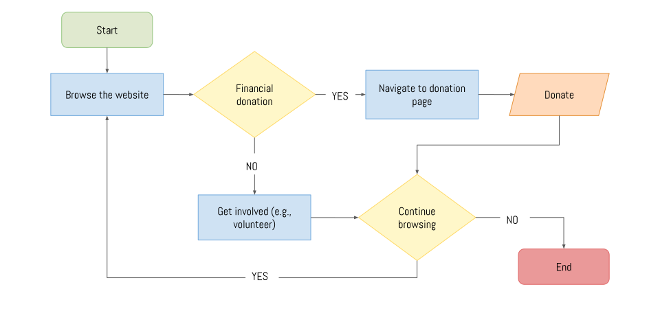
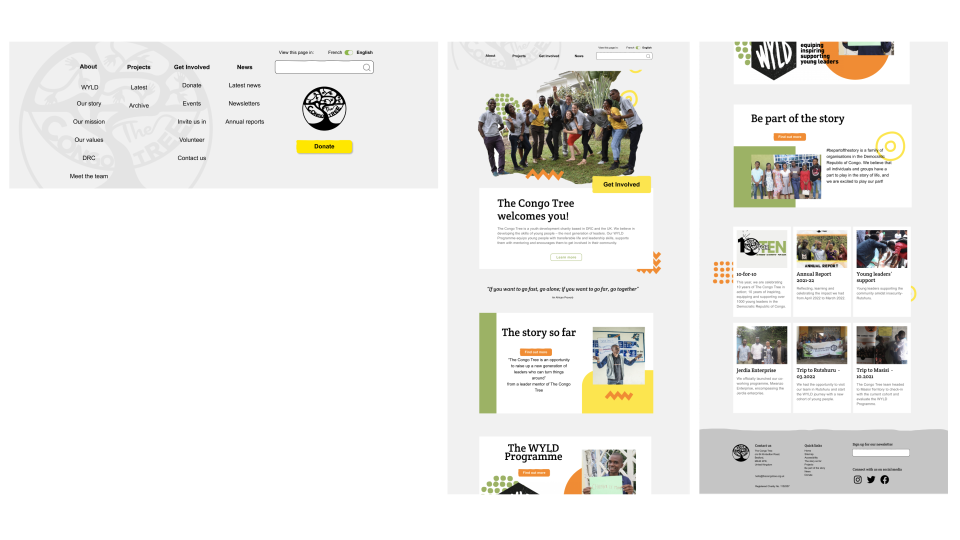
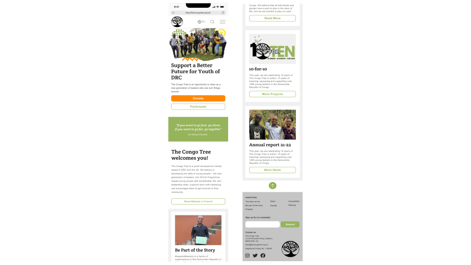

Non-profit Website Redesign

PROJECT OVERVIEW
The Congo Tree is a youth development charity based in the Democratic Republic of Congo (DRC) and the UK. They equip young people in DRC with transferable life and leadership skills, support them with mentoring and encourage them to get involved in their community.
We conducted competitor analysis and used user research to learn more about pain points users faced when using TCT's existing website. The Congo Tree were excited to work with us and also shared their brand guidelines and some wishes for their website.
My responsibilities:
Time: 4 weeks
User Research
WHAT IS THE PROJECT ABOUT?
The problem:
Users were confused about the information they were seeing on the website and unable to use it on a mobile device, as there was no existing responsive web design (RWD). Therefore, we aimed to improve information architecture, navigation and create a RWD solution. Our redesign of the Congo Tree website set out to achieve greater user engagement and allow the non-profit to share its values and goals with more users.
The attitude going into this:
It was important that we listen to both the user testing and stakeholders when redesigning TCT's website, especially since it is a relatively small organisation which operates in a developing country. This means we have to account for UX and UI design which can efficiently work when internet connectivity may be low, although, talking to stakeholders, things have improved since the first design but we still need to be cautious.
Therefore, our design thinking was...
Honour the organisation's identiy and values
Find inpiration from other non-profits websites
Focus on accessibility and colours
Keeping the design simple yet unique and authentic
HOW WAS THE RESEARCH DONE?
Methodology:
We conducting a series of 6 usability tests on the existing Congo Tree website by testing four tasks...
Find out more information about the page
How to get involved with the non-profit
How to donate to the non-profit
Asking - what stood out most on the homapge?
Analysing the data:
From the usability testing we found several improvements and iterations that could be implemented in the re-design to enhance the user experience, these included...
Unclear contacting information
Font and colour combinations intefere with accessibility
Confusing or unclear UI
Information architecture was not clear for new users
Poor navigation
Non-existent RWD for smaller screens
Definition and Ideation
READING THE USER'S MIND...
During user testing and interviews, we discovered that users were confused about the information they were seeing on the website and unable to read large chunks of it.
Therefore, we believe that the website has poor information architecture and poor RWD when switching to mobile view. and that we might be able to help if we improve information architecture and create a RWD solution.
SO, WHAT FEATURES TO INCLUDE?
Using the I Like, I Wish, What If methodology, we collectively outlined the pain-points and needs discovered during the usability tesing and each voted on the most promising features. These included…
More subtle yet visible logo positioning
Better usability and visibility of the search bar
A more informative footer with appropiate links
More interactive elements on pages to engage the user
INFORMATION ARCHITECTURE
The new user flow...
Given the existing information architecture and the journey the user has to take in order to complete the main task (getting involed with the charity) a new user flow was adapted before re-designing.
The stakeholder's response
“Drop downs menus is one of our main needs. A translation toggle/button is also a want, and a more exciting front page too. I'm sure the others could come up with more. Thanks so much for thinking of us!”
Q. Name 5 adjectives to describe your website.
“youthful, creative, professional, inspirational, challenging (not to use, but in what it makes you think about - people going away still thinking about it - to think about us and still be thinking about us 30 mins later).”
Q. How should a person feel when they see your website?
“'oh my gosh this is actually really amazing, why am I not involved already!' - inspired, joyful, engaged.”
~ The Congo Tree
Prototyping
COLLECTIVE BRAINSTORMING
To begin the design process, each of us came up with our own homepage designs for the desktop website, so that we could compare ideas and our reasons for implementing them.
From this, we were then able to design the desktop homepage for The Congo Tree website, in addition to using this as template to create other web pages and RWD for mobile
Three designs...

To this...
Which was also made into a RWD with the same layout for smaller screens

THE FINAL DESIGNS?
Desktop
Mobile
Want more detail? Click here to read the whole case study.